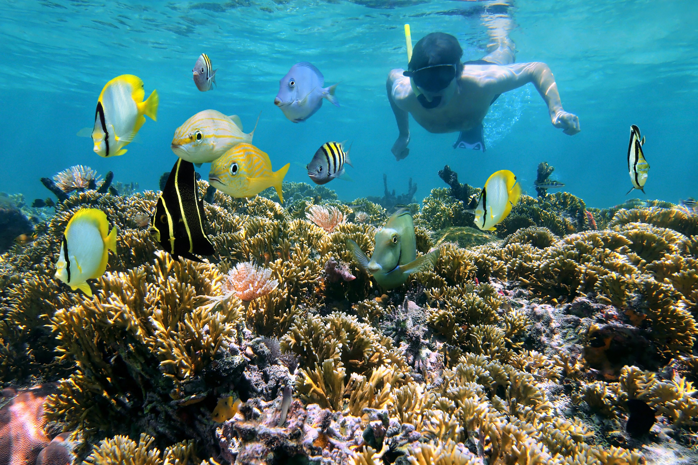
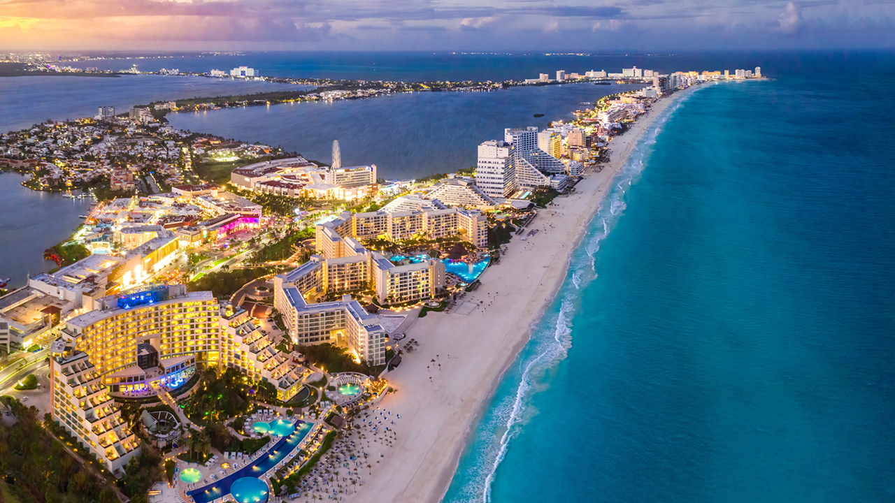
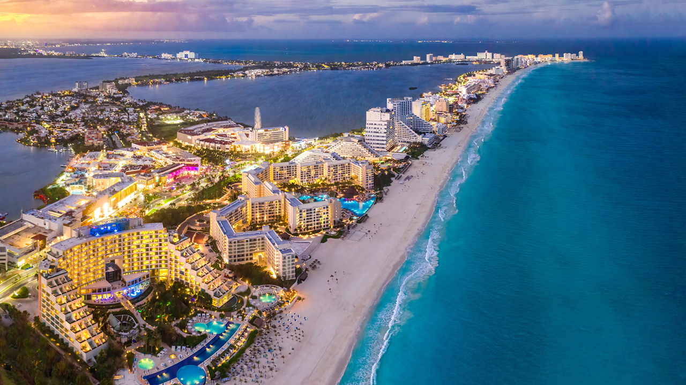

Costa Rica
Dit pakket is de beste combinatie: natuurreservaten en koraalrif. Speciale aanbieding
voor backpackers. Begeleiding van experts. Na de drie dagen lange tocht door het oerwoud geniet je van drie dagen snorkelen met verblijf in Hotel Ecosta.
We vliegen met KLM. Vertrekdatum is elke donderdag om 08.00 uur vanaf Schiphol.
De terugreis is elke donderdag om 13.00 uur. Aankomst de volgende dag om
16.00 uur lokale tijd.
Totale prijs
€ 499 p.p.

Kroatië
Kroatië een land met maar weinig zandstranden. Het grote voordeel van de rots- en kiezelstranden is dat de zee hierdoor zeer helder is en dus uitermate geschikt om te snorkelen. Het leuke van snorkelen is dat het geschikt is voor iedereen die kan zwemmen, dat het overal langs de Kroatische kust mogelijk is.
We vliegen met Lufthansa.
Heenreis 5 april vertrektijd 11:10 uur Schiphol en aankomst 14:30 uur Dubrovnik Dubrovnik.
Terugreis 12 april vertrektijd 16:40 uur Dubrovnik Dubrovnik en aankomst 21:40 uur Schiphol.
Totale prijs
€ 355 p.p.

Griekenland
Kreta is het grootste eiland van Griekenland en heeft een kustlijn van ongeveer 1000 kilometer! Met zijn zachte Mediterraans klimaat en lekkere eten is Kreta al jaren een populaire vakantiebestemming. De onderwaterfauna in de wateren rond Kreta is divers en het water is vooral in de zomermaanden heerlijk warm. Met zijn kleurrijke vissen en spannende rotsformaties is het prima snorkelen op Kreta.
We vliegen met Lufthansa en Aegean.
Heenreis 7 april vertrektijd 8:50 uur Schiphol en aankomst 17:15 uur Heraklion (Kreta) N Kazantzakis.
Terugreis 14 april vertrektijd 10:50 uur Heraklion (Kreta) N Kazantzakis en aankomst 22:15 uur Schiphol.
Totale prijs
€ 437 p.p.

 
